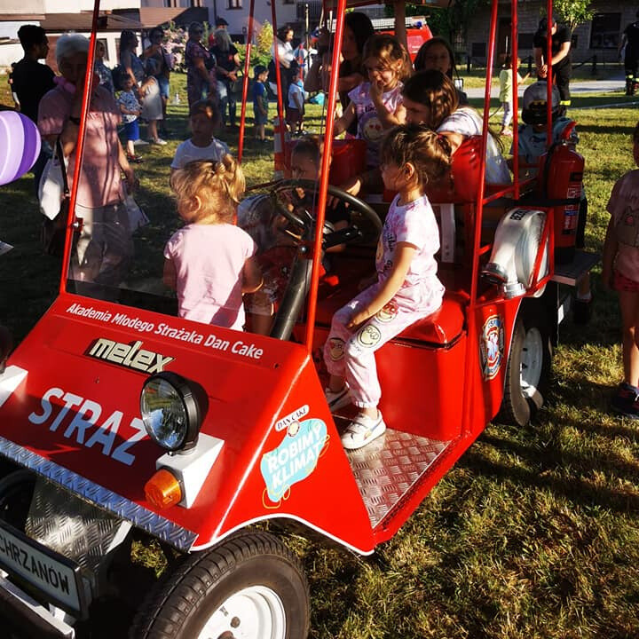

Zmieniamy życie, dbamy o zdrowie i mienie - bo to, co robimy, ma znaczenie. Lokalna społeczność to nasza siła, a zagrożenia to tylko kolejne wyzwania do pokonania. Działamy, bo wiemy, że nawet małe czyny mogą sprawić dużą różnicę.
Historia Ochotniczej Straży Pożarnej w Chrzanowie

Stowarzyszenie Ochotniczej Straży Pożarnej w Chrzanowie, ustanowione w 1872 roku, zyskało nowy impuls w 1997 roku, kiedy to powołano grupę inicjatywną mającą na celu reaktywację stowarzyszenia. Wówczas dokonano ponownej rejestracji sądowej. Pierwszym prezesem jednostki po reaktywowaniu został dh Kazimierz Potocki, a naczelnikiem Stefan Skrzydlewski. Obecnie, w malowniczym Chrzanowie, jednostka OSP nie tylko kontynuuje tradycję strażacką, ale również rozwija się dynamicznie. Oprócz Jednostki Ratownictwa Gaśniczego Komendy Powiatowej Państwowej Straży Pożarnej, w Chrzanowie funkcjonuje również sekcja ratownictwa medycznego. Sekcja ta została założona w 1997 roku i od tego czasu odgrywa kluczową rolę w lokalnej społeczności. Od 2002 roku OSP Chrzanów posiada samochód ratownictwa medycznego - karetkę, co znacząco zwiększa zakres jej działań. Jednostka specjalizuje się nie tylko w standardowych zadaniach strażackich, ale także w doskonaleniu ratownictwa medycznego, organizując szkolenia z pierwszej pomocy oraz imponujące pokazy ratownictwa. Stała obecność jednostki na terenie powiatu i jej aktywność sprawiają, że stanowi ona nieocenione wsparcie dla zawodowych strażaków. Najlepszym dowodem na rosnącą siłę i profesjonalizm ochotników z Chrzanowa jest zajęcie czołowego miejsca w Mistrzostwach Polski w Ratownictwie Medycznym i Drogowym Krajowego Systemu Ratowniczo Gaśniczego (KSRG) zarówno w klasyfikacji ogólnej, jak i zdobycie I miejsca w klasyfikacji jednostek OSP. W 2012 roku jednostka wzbogaciła się o nowy sprzęt - samochód specjalny lekki ratownictwa technicznego.
Ochotnicza Straż Pożarna - Coś się zmieniło
Nasza Ochotnicza Straż Pożarna (OSP) zrzesza imponującą liczbę 111 zaangażowanych osób, w tym 40 doświadczonych strażaków, 11 młodych entuzjastów z Młodzieżowej Drużyny Pożarniczej oraz 60 małych strażaków z Dziecięcej Drużyny Pożarniczej. Nie ograniczamy się jedynie do zadań związanych z gaszeniem pożarów czy udzielaniem pomocy w przypadkach zdarzeń drogowych. Nasza jednostka pełni także rolę zabezpieczających lokalne wydarzeń, czyniąc nas nie tylko strażakami, lecz również gotowymi do działań ratowniczych. W trosce o praktyczną wiedzę i podnoszenie kwalifikacji, systematycznie uczestniczymy w konkursach na różnych szczeblach. Spotykamy się, by dzielić się doświadczeniem i rozwijać umiejętności w wybranych dziedzinach. Naszym priorytetem jest skuteczna pomoc i zapewnienie bezpieczeństwa lokalnej społeczności. W lipcu 2017 roku naszą jednostkę zadysponowano m.in. do ćwiczeń z zakresu pożaru lasu, korzystając z Pojazdu Specjalistycznego Ratownictwa Medycznego z przyczepą logistyczno-medyczną. Kolejne ćwiczenia z zakresu działań ratowniczo-poszukiwawczych oraz taktyczno-bojowe przeprowadzono 2 miesiące później na terenie Zakładu „ORLEN POŁUDNIE S.A. Zakład Trzebinia". Między nimi, aktywnie uczestniczyliśmy w likwidacji skutków katastrofy budowlanej w naszej miejscowości. Dodatkowo, nasza jednostka brała udział w manewrach ratowniczych w latach 2018, 2019 i 2023. Grupa Ratownictwa Medycznego uczestniczyła również w ćwiczeniach komponentu ratownictwa medycznego PSP na terenie Nowego Sącza w 2018 roku. Od roku 2023, z dumą funkcjonuje Młodzieżowa Drużyna Pożarnicza, stanowiąca istotny element kształtowania przyszłości naszej jednostki. Jesteśmy zadowoleni z różnorodności umiejętności naszych członków i ich zaangażowania w lokalną społeczność. Gotowi jesteśmy działać w różnych sytuacjach awaryjnych, zdobywając doświadczenie i podnosząc nasze umiejętności. Wierzymy, że nasza praca przyczynia się do skutecznej pomocy i zapewnienia bezpieczeństwa dla mieszkańców.
Wyposażenie OSP
Ciężki Samochód Gaśniczy
Nasz wiodący pojazd to solidny Ciężki Samochód Gaśniczy - Scania, dołączony do naszej floty w 2020 roku i od tamtej pory niezmiennie służący. Ten rozbudowany pojazd nie tylko spełnia rolę w gaszeniu pożarów, ale również stanowi kompleksowe narzędzie do działań ratunkowych. Wyposażony w wysokociśnieniową pompę z szybkim natarciem, nasz samochód jest gotów stawić czoła różnym wyzwaniom związanym z kontrolą i zwalczaniem ognia. Jednak to nie wszystko, co ma do zaoferowania. Dzięki hydraulice i narzędziom umieszczonym w pojeździe, jesteśmy w stanie skutecznie interweniować w sytuacjach awaryjnych, takich jak wypadki drogowe czy usuwanie przeszkód. Warto wspomnieć o kombinezonach pszczelarskich, które, choć mogą wydawać się nietypowe, stanowią istotny element naszego wyposażenia ochronnego. Dodatkowo, sygnalizatory bezruchu przy aparatach ochrony dróg oddechowych pozwalają nam monitorować bezpieczeństwo załogi w trudnych warunkach. Tak więc nasz Ciężki Samochód Gaśniczy to nie tylko pojazd strażacki, ale kompleksowe narzędzie gotowe sprostać różnorodnym sytuacjom i działać skutecznie w każdym scenariuszu. |
Średni samochód gaśniczyTen średni samochód gaśniczy, który mamy w swoim garażu od roku 2010, to prawdziwy weteran, choć patrząc na niego, można odnieść wrażenie, że jest jak nowy. Jego stała gotowość do akcji i wydajność sprawiają, że jest niezastąpiony w wielu sytuacjach. Na pokładzie tego samochodu gaśniczego nie brakuje użytecznych narzędzi. Oprócz standardowego agregatu gaśniczego i węża do pomp, możemy również polegać na specjalnej motopompie pływającej. To urządzenie pozwala nam skutecznie radzić sobie z zalaniem piwnic czy korzystać z wody z jeziora podczas działań gaśniczych. Nie bez powodu ten pojazd często towarzysza nam przy akcjach gaśniczych, zwłaszcza podczas pożarów traw na terenie naszego powiatu. Jego uniwersalność i zdolność dostosowywania się do różnych warunków sprawiają, że możemy liczyć na niego w różnorodnych sytuacjach. To prawdziwy as w naszym garażu, gotowy na każde wyzwanie. |
Specjalistyczny pojazd ratownictwa medycznegoW naszej jednostce posiadamy wyjątkowy ambulans, który dołączył do naszego zespołu w 2016 roku. Choć formalnie jest to ambulans, dla nas jest to nie tylko środek transportu medycznego, ale również dynamiczne narzędzie gotowe do różnorodnych zadań. Ambulans ten nie tylko działa w sytuacjach nagłych, ale także pełni kluczową rolę w manewrach ratowniczych i medycznych zabezpieczeniach. Jego znaczenie staje się szczególne, gdy nasi strażacy-ratownicy realizują swoją pasję w ramach Grupy Ratownictwa Medycznego. Dysponując sprzętem medycznym, ten ambulans pozwala nam sprawnie reagować na różnorodne sytuacje, od wypadków drogowych po bardziej złożone interwencje medyczne. To nie tylko pojazd medyczny, ale także dynamiczne narzędzie ratownicze, gotowe na wszelkie wyzwania związane z udzielaniem pomocy medycznej. |
Przyczepa medyczno-logistycznaW naszej jednostce mamy przyczepę medyczno-logistyczną, która dołączyła do naszego zespołu w 2012 roku. Od tamtej pory niezawodnie wspomaga nas w różnorodnych zadaniach, pełniąc rolę mobilnego punktu wsparcia. Jest to praktyczny środek, który ma kluczowe znaczenie zarówno w operacjach bojowych, jak i w obszarze logistyki. W skład wyposażenia przyczepy wchodzą istotne elementy, takie jak namiot medyczny i nagrzewnica, co umożliwia skuteczną reakcję na różnorodne sytuacje. Warto zaznaczyć, że jest to jedyny pojazd w naszym powiecie zdolny do otwarcia szpitala polowego w przypadku sytuacji masowego zagrożenia. Przyczepa medyczno-logistyczna nie tylko wspomaga w sytuacjach awaryjnych, ale również odgrywa istotną rolę w trakcie manewrów i szkoleń. Dzięki niej możemy rozwijać umiejętności operacyjne i logistyczne naszego zespołu. To praktyczne narzędzie, które wzbogaca nasze możliwości i zdolności w obszarze ratownictwa i zarządzania sytuacjami kryzysowymi. |
Pojazd Dziecięcej Drużyny Pożarniczej

Posiadanie pojazdu Dziecięcej Drużyny Pożarniczej w postaci Melexa to nie tylko funkcjonalność, ale również radość dla najmłodszych członków społeczności. Choć może nie jest wykorzystywany do poważnych działań ratowniczo-gaśniczych, pełni istotną rolę w budowaniu relacji i integracji społeczności lokalnej. Melex towarzyszący w różnych lokalnych wydarzeniach, takich jak dożynki czy eko-targi, nie tylko dodaje koloru, ale także tworzy pozytywne doświadczenia dla dzieci. Wprowadza je w fascynujący świat strażackich tradycji i działalności społecznej. Obecność gaśnic i węży na pokładzie Melexa, choć może to być element zabawy, stanowi również okazję do edukacji i pokazania podstawowych narzędzi strażackich. To interaktywne podejście może rozbudzić zainteresowanie dzieci służbą ratowniczo-gaśniczą i zaszczepić w nich szacunek do strażaków. W rezultacie Melex nie tylko dostarcza rozrywki, ale również kształtuje pozytywne relacje między społecznością a strażą pożarną, budując więź i wzmacniając zaufanie najmłodszych do lokalnej drużyny strażackiej. |
Zarząd OSP
Krzysztof Chomik
Prezes
Grzegorz Michalczyk
Naczelnik

Kamil Kaleta
Zastępca naczelnika
Katarzyna Brzózka
Sekretarz
Paweł Ostrzewilk
Skarbnik
Marek Bębenek
Członek zarządu
Filip Kostrzewiński
Przewodniczący komisji rewizyjnej
Katarzyna Cyran
Sekretarz komisji rewizyjnej
Józef Kwiatek
Członek komisji rewizyjnej
Grupa Ratownictwa Medycznego OSP Chrzanów
Grupa ratownictwa medycznego, operująca od wielu lat na obszarze powiatu chrzanowskiego, pełni ważną rolę w jednoczeniu trzech jednostek Ochotniczej Straży Pożarnej – w Chrzanowie, Libiążu oraz Rozkochowie. To zgrane partnerstwo umożliwia skuteczne poszerzanie zakresu działań ratowniczych oraz wspólne podejście do podnoszenia kwalifikacji i umiejętności. Regularne spotkania grupy stanowią okazję do systematycznego doskonalenia się w obszarze Kwalifikowanej Pierwszej Pomocy oraz różnorodnych medycznych czynności ratunkowych. Uczestnictwo w manewrach na poziomie lokalnym, zawodach ogólnopolskich, wojewódzkich i gminnych stanowi nie tylko sprawdzian umiejętności, ale również doskonałą okazję do wymiany doświadczeń i integracji środowiska ratowniczego. Grupa aktywnie angażuje się w zabezpieczenia medyczne na obszarze powiatu, ale również podejmuje wyzwania wykraczające poza jego granice. Świadomość strażaków-ratowników dotycząca ważności wiedzy jest głęboko zakorzeniona, jednak zdają sobie oni sprawę, że to doświadczenie stanowi kluczowy element skutecznego działania w sytuacjach kryzysowych. Dlatego też skupiają się nie tylko na teoretycznym przygotowaniu, ale również na praktycznym rozwijaniu umiejętności, aby sprostać wszelkim wyzwaniom związanym z ratownictwem medycznym.
Zarząd GRM
Grzegorz Michalczyk
Przewodniczący
Ratownik Medyczny
Katarzyna Głownia
Logistyk
Anna Kaszuba
Skarbnik
Artur Krawczyk
Kwatermistrz